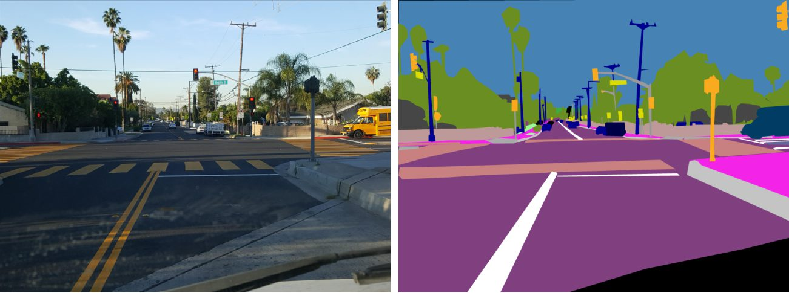
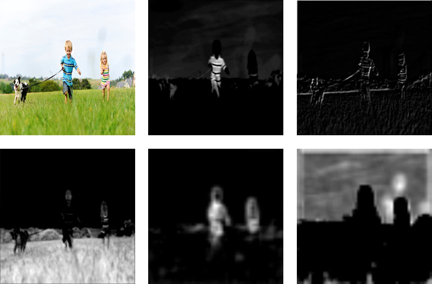

A plain-language tour of how deep networks learned to label every pixel
Image segmentation means giving every pixel in a picture a label, so that a road, a person or a tumour comes out as a clean region. Many deep-learning techniques for it have appeared in recent years. We wrote this survey to give an intuitive understanding of the major ones: why each is designed the way it is, what it gets right and where it fails.
What segmentation is
In the classic version, called semantic segmentation, each pixel is assigned to one of a fixed set of classes such as road, sky or car. The survey is careful to say that the right labels depend on the job. A pedestrian detector wants the whole person as one segment. A system that recognises actions may need arms and legs as separate ones. Other variants include saliency detection (find the most eye-catching object) and instance segmentation (give each individual car its own mask, which is needed for counting).

Before deep learning, people used thresholding, clustering, edge detection, region-based methods and similar approaches. They share one weakness. They depend on features that a human expert chose, and people tend to miss subtle patterns. A convolutional neural network (CNN) learns its own features instead. It slides small filters over the image, and training adjusts the filters to whatever helps the task.
Why convolutions suit the task
After training, the filters of a typical CNN tend to respond to particular features of objects. Each filter outputs an activation map, an image showing where its pattern was found, and these maps can be read as rough masks of those features. In early layers they pick out contours and small parts, such as a T-shirt. In later layers they light up on larger things such as fields, people and sky, but with blurrier edges. Most segmentation methods use this property to turn the maps into the masks they need.

The families of methods
We grouped the methods by their main idea and drew almost all the networks in one shared visual format, so that similarities and differences are easy to see. Table 2 of the survey summarises the major methods with a short note on each contribution.
- CNN-based. FCN removes the final fully connected layers and classifies pixels directly. It scored a pixel accuracy of 90.3% and a mean IoU of 62.7% on PASCAL VOC 2011. Region-proposal networks such as Mask R-CNN add a branch that masks each detected object. DeepLab uses atrous (dilated) convolutions, which widen a filter's field of view without adding parameters, and attained a mean IoU of 79.7 on PASCAL VOC 2012.
- Encoder-decoder. The encoder compresses the image and the decoder expands it back to a full-size label map. This frees the network from a fixed input size. SegNet forwards the positions of max-pooling winners to the decoder. U-Net copies whole feature maps across, so fine detail survives.
- Adversarial. A discriminator network tries to tell the ground-truth masks from the predicted ones, which pushes the segmenter to produce realistic masks.
- Sequential. Convolutional LSTMs and attention models pick out instances of an object one after another.
- Weak, unsupervised and interactive. These need fewer or coarser labels. BoxSup trains from bounding boxes and reached a mean IoU of 75.1 on PASCAL VOC 2012, against 62.2 for FCN. W-Net chains two U-Nets and needs no labels at all. Deep Extreme Cut asks the user for four clicks on the extremes of an object.
- Efficient. ENet has 0.37 million parameters. Deep Layer Cascade handles easy pixels early and spends effort only on hard ones, reaching 23.6 frames per second against 14.6 for SegNet. Our own SegFast has about 0.6 million parameters and runs a forward pass in around 0.38 seconds without a GPU.

Results in more detail
A survey runs no experiments of its own. The scores below are the ones the original works reported for their methods, which the survey quotes in its text. Its Table 2 lists the methods and its Table 1 the datasets. The methods were tested on different datasets and test sets, so these numbers show what each work reported and are not a ranking. We did not re-run any of them.
- Sharper masks. SharpMask combines the masks from every layer from the top down. It scored an average recall of 39.3 on the MS COCO segmentation dataset, against 36.6 for DeepMask. In the DeepLab versions, a conditional random field (CRF), a module that pushes nearby pixels of similar colour towards the same class, raised the mean IoU on Pascal 2012 by up to 4% in some cases.
- Several scales at once. PSPNet pools the features at several sizes. It scored a mean IoU of 57.21 on the ImageNet Scene Parsing Challenge, with 44.80 for FCN and 40.79 for SegNet. RefineNet obtained an IOU of 68.6 on the Person-Part dataset, against 64.9 for DeepLab-v2, both using ResNet-101 as the feature extractor.
- Encoder-decoder networks. On the CamVid dataset, SegNet scored a mean IoU of 60.10, against 53.88 for DeepLab-LargeFOV, 49.83 for FCN and 59.77 for Deconvnet. U-Net won an ISBI cell-tracking challenge, with a mean IoU of 0.9203 on the PhC-U373 dataset where the second best was 0.83, and 0.7756 on DIC-HeLa where the second best was 0.46.
- Interactive and efficient methods. Deep Extreme Cut, which asks for four clicks on the object, attained a mean IOU of 80.3 on the PASCAL test set. Deep Layer Cascade reached 82.7 on the VOC12 test set, with DeepLab-V2 and Deep Parsing Network the nearest competitors at 79.7 and 77.5. A superpixel method with several levels of context reached a pixel accuracy of 77.14%, against 74.56% for an earlier superpixel network.
Table 2 of the survey gives the year of each method and ticks that show how it is supervised, how it learns, what kind of segmentation it does and which modules it uses. The selection below keeps the year, the kind of supervision and the short description. Supervised methods learn from pixel-level labels. Weakly supervised ones use coarser labels such as bounding boxes, and interactive ones take input from a user.
| Method | Year | Supervision | Description |
|---|---|---|---|
| FCN | 2015 | Supervised | Fully convolutional layers |
| U-Net | 2015 | Supervised | Encoder-decoder with multi-scale feature concatenation |
| SegNet | 2015 | Supervised | Encoder-decoder with forwarding pooling indices |
| BoxSup | 2015 | Weakly supervised | Using bounding box for weak supervision |
| Semantic Segmentation | 2016 | Supervised | Adversarial training for image segmentation |
| ENet | 2016 | Supervised | Compact network for real-time segmentation |
| Mask R-CNN | 2017 | Supervised | Using region proposal network for segmentation |
| PSPNet | 2017 | Supervised | Multi-scale pooling for scale-agnostic segmentation |
| W-Net | 2017 | Unsupervised | Unsupervised segmentation using normalized cut loss |
| Deep Layer Cascade | 2017 | Supervised | Multi-level approach to handle pixels of different complexity |
| DeepLab | 2018 | Supervised | Atrous convolution, spatial pooling pyramid, DenseCRF |
| Deep Extreme Cut | 2018 | Interactive | Using extreme points for interactive segmentation |
| Two Stream Fusion | 2019 | Interactive | Using image stream and interaction stream simultaneously |
| SegFast | 2019 | Supervised | Using depthwise separable convolution in SqueezeNet encoder |
Most methods in the full table are supervised. The weakly supervised, unsupervised and interactive ones are in the minority, and the survey says that unsupervised and weakly supervised methods are still far from reaching saturation.
Segmentation methods need data, and Table 1 groups the public datasets by application. Natural scenes include PASCAL VOC, Microsoft COCO and ADE20K. The driving group includes CamVid, Cityscapes, Mapillary Vistas, SYNTHIA, KITTI, Berkeley Deep Drive and the India Driving Dataset. There are also aerial, video, saliency and scene-text groups, and a medical group with sets for retinal vessels, brain tumours, liver tumours and stroke lesions.
| Category | Datasets |
|---|---|
| Natural scenes | Berkeley Segmentation Dataset; PASCAL VOC; Stanford Background Dataset; Microsoft COCO; MIT Scene Parsing Data (ADE20K); Semantic Boundaries Dataset; MSRC |
| Video segmentation | DAVIS; VSB100; YouTube-Video Object Segmentation |
| Autonomous driving | CamVid; Cityscapes; Mapillary Vistas; SYNTHIA; KITTI Vision Benchmark Suite; Berkeley Deep Drive; India Driving Dataset (IDD) |
| Aerial imaging | Inria Aerial Image Labeling Dataset; Aerial Image Segmentation Dataset; ISPRS Dataset Collection; Google Open Street Map; DeepGlobe |
| Medical imaging | DRIVE; Sunnybrook Cardiac Data; Multiple Sclerosis Database; IMT; SCR; BRATS; LITS; BACH; IDRiD; ISLES |
| Saliency detection | MSRA Salient Object Database; ECSSD; PASCAL-S Dataset; THUR15K; JuddDB; DUT-OMRON Image Dataset |
| Scene text segmentation | KAIST Scene Text Database; COCO-Text; SVT: Street View Text Dataset |
Discussion
Choosing a method means weighing several things. One is how much labelled data you have. Another is whether you can start from a pre-trained network. A third is whether you need instances or only classes, and how much speed matters. Encoder-decoder networks and fully convolutional ones are the most common choice for semantic segmentation. Instance-level work often couples these with detection, attention or recurrent parts. For speed, depth-wise separable convolutions and kernel factorization can cut the number of parameters to a great extent without reducing performance too much. GANs have risen sharply in popularity, yet only a handful of segmentation approaches use them, so we see room there.
Data is the main constraint. On small datasets it is common to pre-train a network on a larger dataset from a similar domain. Sometimes many images exist but pixel-level labels do not, because making them is a taxing job. Pre-training parts of a network on related problems such as classification or localisation can still help. Encoder-decoder networks have a further benefit. If the down-sampling and up-sampling are designed carefully, the output has the same size as the input, which removes the dependency on input size and makes the system more scalable than simple convolutional approaches like FCN or DeepMask.
For the future we expect progress to depend largely on the quality and quantity of data. There is plenty of unstructured data on the Internet, but accurate annotations are scarce, and pixel-level ones are very hard to obtain without manual work. The ideal would be to use the data distribution itself to find segments that stand for concepts rather than content, which is a challenging task. Weakly supervised work is also demanding and promising, since labels for classification or localisation are much easier to collect.
The survey also covers applications: image retrieval, medical imaging, object detection, forensics and surveillance. In medical imaging, for example, the main challenges are the lack of bulk data for difficult diseases and the variety in image quality between imaging devices.
This is a theoretical survey, with the limits that implies. We explain and compare ideas but did not re-run the methods side by side, and the quoted numbers come from different benchmarks. We suggest that an empirical analysis of the discussed methods could follow. The article is written for new researchers, with minimal mathematics, so that they can see why a design works before trying to improve it.
Sources
The figures and tables listed here are taken from the paper cited at the top of this page; the numbers quoted in the text come from it too.
- Figures: Fig. 1, Fig. 3, Fig. 13
- Tables: Table 1: public segmentation datasets grouped by application area; Table 2: summary of the major deep-learning segmentation methods
Acknowledgements
This work was partially supported by project order no. SB/S3/EECE/054/2016, dated 25/11/2016, sponsored by SERB (Government of India), and carried out at the Centre for Microprocessor Application for Training Education and Research, CSE Department, Jadavpur University. The authors also thank the reviewers for their valuable suggestions, which helped to improve the quality of the article.
Cite the paper
Swarnendu Ghosh, N Das, I Das, U Maulik (2019). Understanding deep learning techniques for image segmentation. ACM Computing Surveys (CSUR), Vol. 52, No. 4, pp. 1–35 · ACM.
@article{ghosh2019deep,
author = {Ghosh, Swarnendu and Das, N and Das, I and Maulik, U},
title = {Understanding deep learning techniques for image segmentation},
journal = {ACM Computing Surveys (CSUR)},
volume = {52},
pages = {1--35},
publisher = {ACM},
year = {2019},
doi = {10.1145/3329784}
}